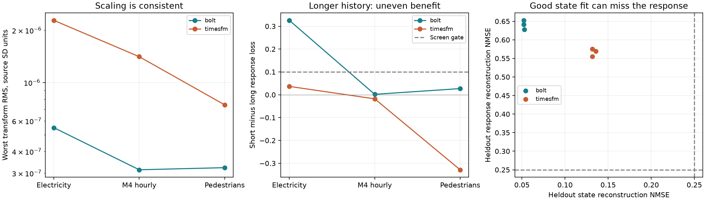

Two checkpoints, 24 hourly source series, 12 discovery and 12 heldout sources. No pilot meets its frozen expansion gate. These are bounded exploratory screens, not evidence that the broader research ideas are false.
| Experiment | Chronos-Bolt small | TimesFM 2.5 200M |
|---|---|---|
| 2. Four-input interaction | Stop; internal predictor does not beat input controls consistently | Stop; internal predictor does not beat input controls consistently |
| 3. Transfer across backgrounds | Stop; failed natural, oracle validity gates | Stop; failed natural, oracle validity gates |
| 4. Units and scaling | No practical scaling defect (largest dataset mean 5.49e-07) | No practical scaling defect (largest dataset mean 2.28e-06) |
| 5. Useful versus irrelevant history | Stop; effect gates fail; history-control discontinuity fails | Stop; effect gates fail; history-control discontinuity fails |
| 6. SAE measurement stability | Stop; response reconstruction fails fidelity gate | Stop; response reconstruction fails fidelity gate |

Changing units leaves forecasts and component responses nearly unchanged on these inputs. Interaction features do not consistently improve heldout prediction beyond input controls. Raw hidden-state transfer is not interpretable without natural-response and normalization closure checks. The old-history control has a discontinuity failure, so this screen cannot isolate useful-history effects. Small SAEs reconstruct states better than they reconstruct the controlled change; unstable feature IDs therefore cannot establish unstable model semantics.
The same sources, hourly sampling, horizon32, history128/256, phase and relative amplitude were used for both models. Native tokenization, training and normalization differ. Last-block output is the declared intervention role; equal architectural depth is not asserted. Real sources are separate from the sealed benchmark. Classical seasonal-naive and Fourier/trend baselines and separate forecast-and-sum controls are included in the records. Only three datasets are represented; pretraining overlap is unknown.
No broader native sweep, larger SAE, rank search or training run follows these negative screens. IDs1/7/8 remain parked; IDs7/8 still lack the positive mechanism or diagnostic needed to justify their compute.
summary.json · protocol.json · audit.json · bolt.json · timesfm.json · mutation_checks.json
Protocol frozen before inference. All six planted regressions are detected. Independent model-free replay verifies saved losses, source pairing, finite arrays and resource bounds. Captured short-history states, intervention forecasts and SAE weights remain in the run directory. The audit replays short-history, transfer, scaling and SAE functional losses. History gates use stored source losses because the unmodified long/control forecasts were not retained; SAE reconstruction and geometry diagnostics are not independently regenerated. Only lightweight records are published here.
Evidence: exploratory behavioral and within-model interventions. Failed validity and fidelity gates are distinguished from scientific negatives. ROADMAP §49.24–49.25.